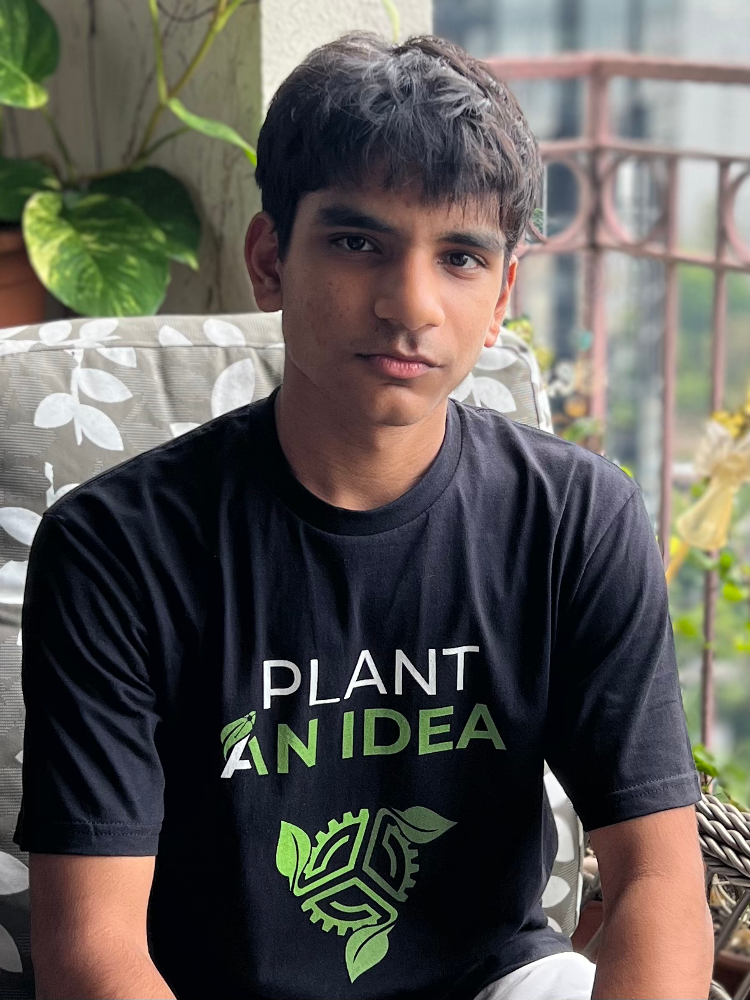

About
About the Founder

Ishaan Puri is a senior at Singapore American School, deeply passionate about STEM, sustainability, and social entrepreneurship. His journey into agricultural innovation began with a program by DASRA, an Indian venture-philanthropy fund, where he saw first-hand the challenges Indian farmers face — particularly the lack of innovation caused by social perceptions of farming as a low-status profession. Motivated to change that, he founded Plant An Idea to bridge the technological divide between rural farmers and urban companies, improving agrifood systems and farmers' livelihoods by tackling the inefficiencies of seed planting. Beyond social entrepreneurship, Ishaan is an avid researcher in physics and artificial intelligence, including as a research assistant at the National University of Singapore, and believes true change comes from innovation and hands-on problem-solving. Outside of school, he drums for his school's band and plays tennis.
Connect on LinkedIn